Как я упростил CRM для менеджеров (B2B)

images/crm/hero.png
Контекст
Этот кейс основан на реальной задаче, над которой я работал в Медрокет. В рамках проекта я занимался редизайном страницы клиента — одного из ключевых экранов CRM-системы, которую компания использует для работы с медицинскими организациями. Менеджеры ежедневно используют эту страницу для сопровождения клиентов и мониторинга показателей.
Из-за ограничений NDA я не могу показывать оригинальный интерфейс системы, поэтому адаптировал кейс под сферу недвижимости. Все данные и контент я заменил на вымышленные, сохранив структуру страницы, логику работы и сценарии.
Исследование
UX-аудит текущего решения
Чтобы понять, какие проблемы могут возникнуть при работе со страницей клиента в CRM, я провёл аудит текущего интерфейса.
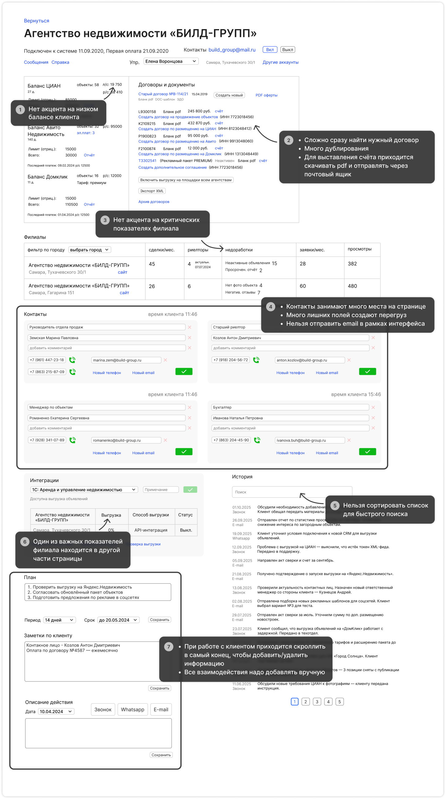
images/crm/audit.png
В результате я выделил четыре основные группы болей:
- Отсутствие акцента на критических показателях
- Отсутствие автоматизации рутинных действий
- Перегруженность интерфейса
- Неполные пользовательские сценарии. Некоторые действия невозможно выполнить в рамках CRM, из-за чего менеджерам приходится переходить во внешние инструменты
Анализ ключевых сценариев
Я визуализировал ключевые сценарии в виде схем и отметил шаги, на которых возникают проблемы у пользователя.
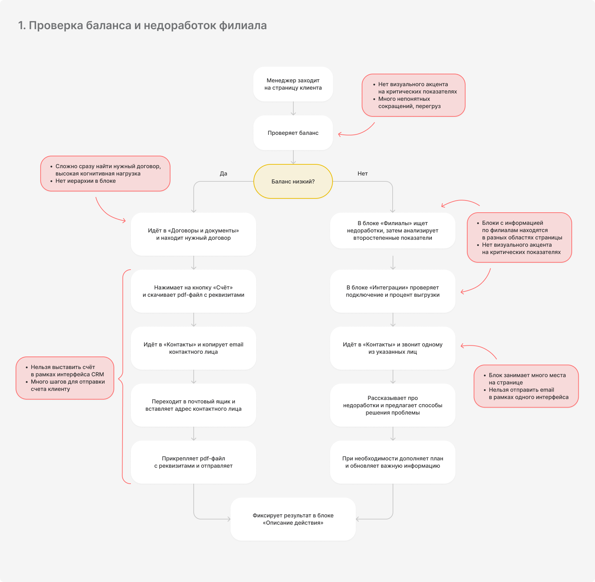
images/crm/userflow1.png
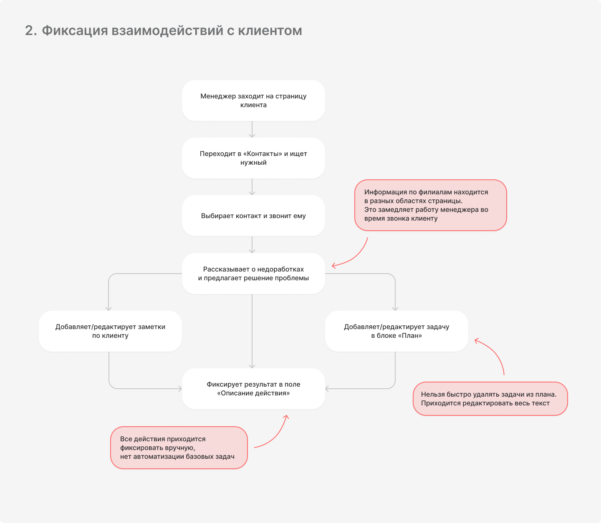
images/crm/userflow2.png
Определение проблемы
Перегруженность интерфейса и отсутствие визуальной иерархии мешают менеджерам быстро находить ключевую информацию, фокусироваться на приоритетных задачах и оперативно фиксировать взаимодействия с клиентом.
Понимание задачи
Задача
Оптимизировать страницу клиента в CRM, чтобы повысить эффективность менеджеров при работе с клиентом.
Целевая аудитория:
Менеджеры по продажам, ежедневно работающие с клиентской базой в CRM и отвечающие за удержание и развитие клиентов.
Ценность для пользователя
- Ускорение поиска ключевой информации
- Быстрая фиксация взаимодействий
- Автоматизация плановых задач
Ценность для бизнеса
- Повышение продуктивности менеджеров
- Улучшение проработки клиентов
- Больше подключённых услуг
Критерии успеха
- Сокращение среднего времени проработки клиента в CRM
- Рост количества клиентов, обработанных одним менеджером за период
- Снижение доли клиентов с критическими показателями/недоработками
Гипотезы решений
Для каждой боли, выявленной в ходе анализа, я сформулировал гипотезы решений, направленные на снижение когнитивной нагрузки и ускорение работы с клиентом.
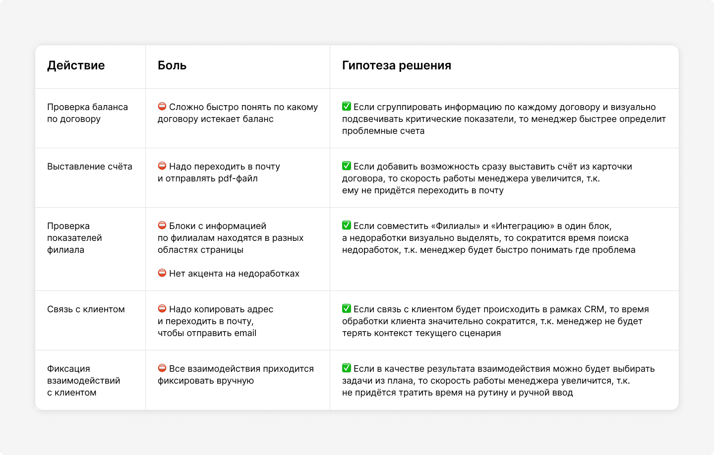
images/crm/hypotheses-table.png
Гипотеза 1. Проверка баланса по договору
Если сгруппировать информацию по каждому договору и визуально подсвечивать критические показатели, то менеджер быстрее определит проблемные счета.
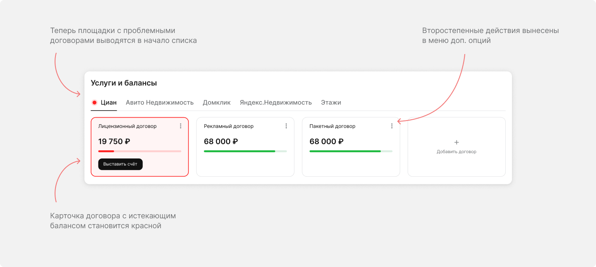
images/crm/hypothesis-1.png
Гипотеза 2. Выставление счёта
Если добавить возможность сразу выставить счёт из карточки договора, то скорость работы менеджера увеличится, т.к. ему не придётся переходить в почту.
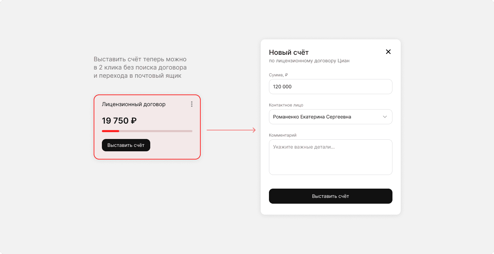
images/crm/hypothesis-2.png
Гипотеза 3. Проверка показателей филиала
Если совместить «Филиалы» и «Интеграцию» в один блок, а недоработки визуально выделять, то сократится время поиска недоработок, т.к. менеджер будет быстро понимать где проблема.
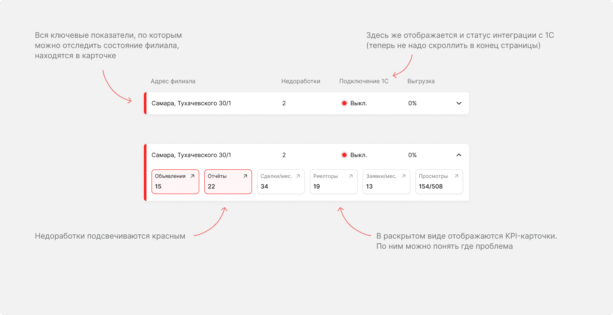
images/crm/hypothesis-3.png
Гипотеза 4. Связь с клиентом
Если связь с клиентом будет происходить в рамках CRM, то время обработки клиента значительно сократится, т.к. менеджер не будет терять контекст текущего сценария.
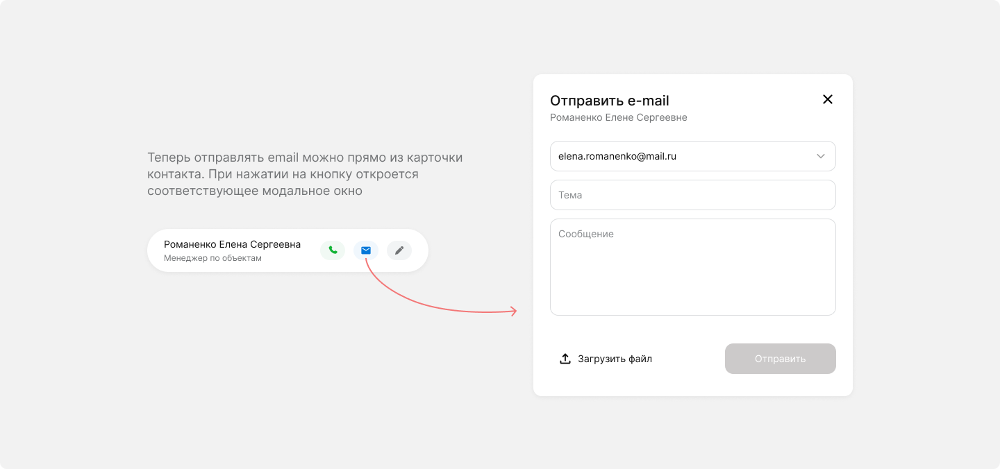
images/crm/hypothesis-4.png
Гипотеза 5. Фиксация взаимодействий с клиентом
Если в качестве результата взаимодействия можно будет выбирать задачи из плана, то скорость работы менеджера увеличится, т.к. не придётся тратить время на рутину и ручной ввод.
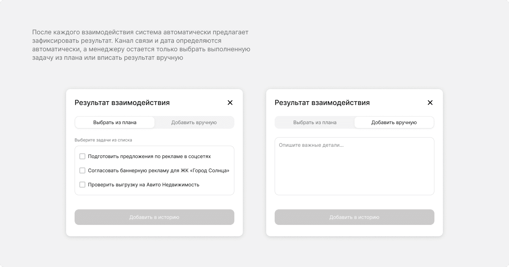
images/crm/hypothesis-5.png
Финальный дизайн
Одной из ключевых проблем старого интерфейса было отсутствие акцента на критических показателях: балансы и статусы по филиалам терялись среди второстепенных данных.
В новом дизайне критические показатели выделены цветом, структура упрощена, а важная информация вынесена в верхнюю часть страницы. Благодаря этому страница стала проще для восприятия и время на поиск нужной информации снизилось.
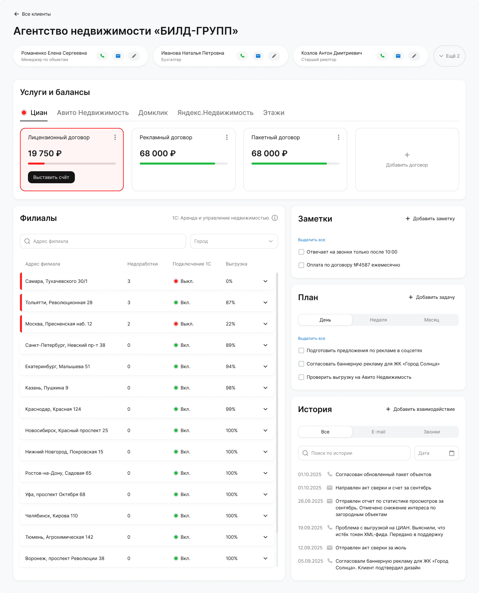
images/crm/final-design.png
Проработка состояний
Для основных интерактивных блоков я проработал логику поведения элементов и все возможные состояния (создание, редактирование, массовое выделение, переполнение списков и т.д.), чтобы полностью описать поведение интерфейса и подготовить макеты к передаче в разработку.
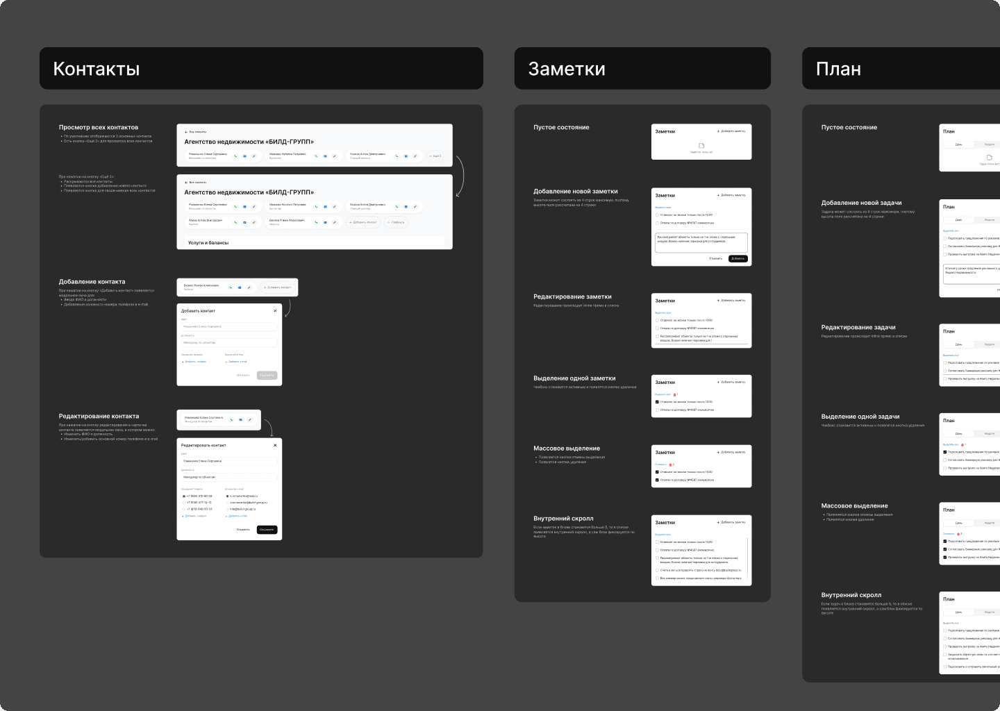
images/crm/states.png
Как изменились ключевые сценарии
1. Выставление счёта по договору с истекающим балансом
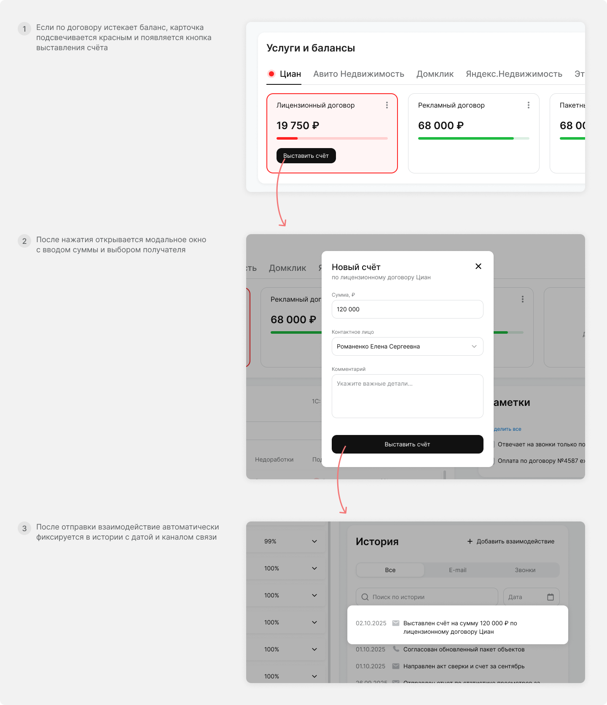
images/crm/scenario1.png
2. Поиск недоработок и фиксация взаимодействий
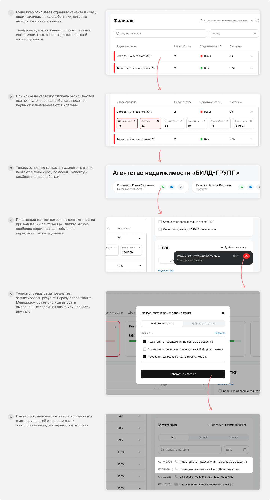
images/crm/scenario2.png
Итоги работы
✅ Что удалось реализовать
- Информация стала более структурированной и сгруппирована в отдельные смысловые блоки, что упрощает сканирование страницы
- Ключевые показатели визуально выделены, что позволяет быстрее находить проблемные зоны и устранять недоработки
- Сценарий выставления счёта по договору теперь происходит в рамках интерфейса CRM и состоит из 2–3 шагов вместо 7
🔍 Как проверял
Для финальной проверки решений я провёл сравнительный тест исходной и обновлённой версии страницы, где участникам теста предлагалось выполнить основные задачи менеджера. В результате участники быстрее находили информацию благодаря визуальной иерархии и акцентам на критических показателях.
📈 Ожидаемый эффект
- Сокращение среднего времени проработки клиента в CRM
- Рост количества клиентов, обработанных одним менеджером за период
- Снижение доли клиентов с критическими показателями/недоработками
Другие проекты

images/cover-prodoctorov.png
Как я сократил сценарий записи к врачу в 2 раза
Новое решение позволяет выбрать врача и записаться прямо с карты, сократив путь пользователя с 11 до 6 шагов, а среднее время прохождения сценария — с 1:59 до 29 секунд.

images/cover-tbank.png
Организация совместных поездок в Т-банке
С помощью Claude спроектировал и протестировал функционал совместных поездок, который объединяет планирование, сбор средств и контроль общих расходов внутри приложения на протяжении всей поездки. В сценарий также интегрированы существующие возможности и сервисы экосистемы Т-Банка.